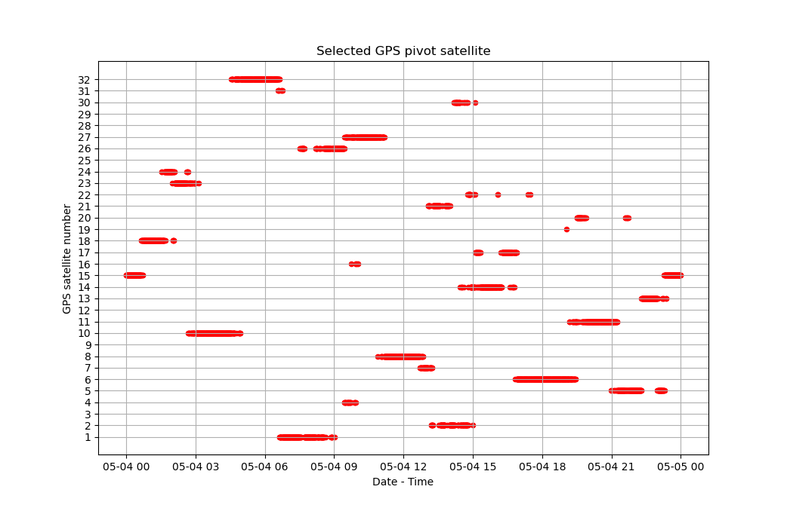

Etape 5 : Export et affichage des résultats
Nous allons maintenant voir comment écrire une fonction pour afficher, et une fonction pour exporter le satellite pivot choisi au cours du temps.
Compléter function_display.py
Ouvrez le fichier "function_display.py" de votre projet.
Complétez-la avec le code suivant :
###############################################################################
#HEADER
#This short function returns a figure showing the GPS satellite number of the
#selected pivot, as a function of time.
#Inputs:
# -df_pivot: Pandas DataFrame as returned by the "pivot" function.
#Outputs:
# -fig_pivot: Matplotlib axes object of the selected pivot satellite as a
# function of time.
#Author: Arthur DENT
###############################################################################
#Function definition:----------------------------------------------------------
def display(df_pivot):
fig_pivot = df_pivot.plot(kind='scatter',x='date',y='sat',title='Selected GPS pivot satellite',xlabel='Date - Time',ylabel='GPS satellite number',color='r',grid='True',yticks=[i for i in range(1,df_pivot['sat'].max()+1)])
return fig_pivot
Cette fonction réalise un affichage en nuage de points ("scatter plot") des satellites GPS sélectionnés comme pivots en fonction du temps.
Nous allons voir dans la suite comment utiliser la méthode "plot" des DataFrames Pandas afin de réaliser des affichages graphiques.
Si vous connaissez déjà bien Pandas, et que vous avez tout compris du code ci-dessus, vous pouvez directement passer à la section suivante.
Affichages à partir d'un DataFrame
Les DataFrames Pandas ont une méthode associée "plot()", qui fait appel à la bibliothèque Matplotlib pour facilement réaliser des affichages graphiques.
On donne en entrée de la méthode le type d'affichage à réaliser (dans notre cas un nuage de points), les colonnes du DataFrame à utiliser pour les différents axes x et y, et les labels. D'autres paramètres de mise en forme de la figure sont possibles (dans notre cas la couleur des points, l'ajout d'une grille en fond, la position des labels sur l'axe des y).
Ce qui donne une commande du type :
df.plot(kind='...',x='...',y='...',title='...',xlabel='...',ylabel='...')
A partir de ces informations, essayez de comprendre notre fonction "display".
Voici ce que cette fonction donnera une fois appliquée à notre fichier exemple de la station GODS :

Voici une petite liste des types d'affichages graphiques possibles avec Pandas :
-
"line" : une courbe classique, c'est le mode par défaut.
-
"bar" : un diagramme en barres.
-
"hist" : un histogramme.
-
"box" : une boîte à moustaches.
-
"kde" : "Kernel Density Estimation".
-
"area" : un graphique en aires.
-
"pie" : un camembert.
-
"scatter" : un nuage de points.
A vous de choisir le type d'affichage le plus pertinent pour votre projet !
Compléter function_export.py
Ouvrez le fichier "function_export.py" de votre projet.
Complétez-la avec le code suivant :
###############################################################################
#HEADER
#This function writes a CSV file containing the GPS satellite number of the
#selected pivot, as a function of time. The path of and name of the CSV file is
#defined by the user.
#Inputs:
# -df_pivot: Pandas DataFrame as returned by the "pivot" function.
# -file_path: path of the directory where the CSV file will be saved.
# -file_name: name of the CSV file to be saved.
#Outputs:
# -None.
#Author: Arthur DENT
###############################################################################
#Libraries importation:--------------------------------------------------------
import os
#Function definition:----------------------------------------------------------
def export(df_pivot,file_path,file_name):
#Open the CSV file at the given path, with the given name:
file = open(os.path.join(file_path,file_name+'.csv'),'w')
#Write the header, containing the columns names:
file.write('date,pivot\n')
#Iterate on the rows of the Pandas DataFrame:
for idx in range(len(df_pivot)):
#Write a line containing a date / pivot satellite number couple:
file.write(str(df_pivot['date'].loc[idx])+','+str(df_pivot['sat'].loc[idx])+'\n')
#Close the CSV file:
file.close()
Cette fonction permet d'exporter le DataFrame contenant le satellite GPS choisi comme pivot en fonction du temps sous la forme d'un fichier CSV.
| Définition du format CSV |
|---|
| Ce sont les initiales de "Comma Separated Values". |
| Il s'agit d'un format d'encodage de données sous la forme d'un tableau, dans un fichier texte. |
| Comme son nom l'indique, chaque ligne représentera une ligne du tableau, dont les éléments pour chaque colonne seront séparés par une virgule. |
| La 1ère ligne correspond en général aux labels des colonnes. |
| La fin d'une ligne est en général marquée par le caractère de retour à la ligne '\n'. |
Par exemple, le CSV suivant :
date,pivot
2024-05-04 00:00:00,15
2024-05-04 00:00:30,15
2024-05-04 00:01:00,15
donnera le tableau :
| date | pivot |
|---|---|
| 2024-05-04 00:00:00 | 15 |
| 2024-05-04 00:00:30 | 15 |
| 2024-05-04 00:01:00 | 15 |
Le format CSV est un classique en analyse de données. Il est lisible par de nombreux logiciels (dont Office Excel et OpenOffice Calc), et importable sous la forme d'un DataFrame avec Pandas avec la méthode :
df = pd.read_csv('...')
qui prend en entrée le chemin du fichier à importer.
Nous allons voir dans la suite comment écrire un fichier CSV avec Python.
Il est à noter que les DataFrames Pandas ont une méthode associée "to_csv()", qui permet en une ligne d'exporter un DataFrame en un fichier CSV. Nous avons re-codé l'export ici dans le seul but de vous faire découvrir la méthode "write", qui est applicable à d'autres types de fichiers que les CSV.
Si vous savez déjà écrire un fichier avec Python, et que vous avez tout compris du code ci-dessus, vous pouvez directement passer à la partie suivante.
Export de données en fichier CSV
Nous avons vu précédemment comment ouvrir fichier avec la fonction Python "open", et le lire ligne à ligne avec la fonction "readline".
Une fois un fichier ouvert en mode écriture :
file = open(file_path,'r')
on peut aussi écrire dedans avec la fonction Python "write" :
file.write('...')
qui prend en entrée la chaîne de caractère à écrire dans le fichier.
Pour passer une ligne, il faut ajouter '\n' à la fin de la chaîne de caractères.
Comme expliqué précédemment, il ne faut pas oublier de fermer le fichier après utilisation :
file.close()
Vous devriez à présent comprendre ce que fait notre fonction "export".
Nous avons à présent dans notre projet des fonctions permettant d'afficher des graphiques de nos données, et de les exporter au format CSV. Dans la partie suivante, nous allons écrire des scripts d'exemple et de test de notre projet.